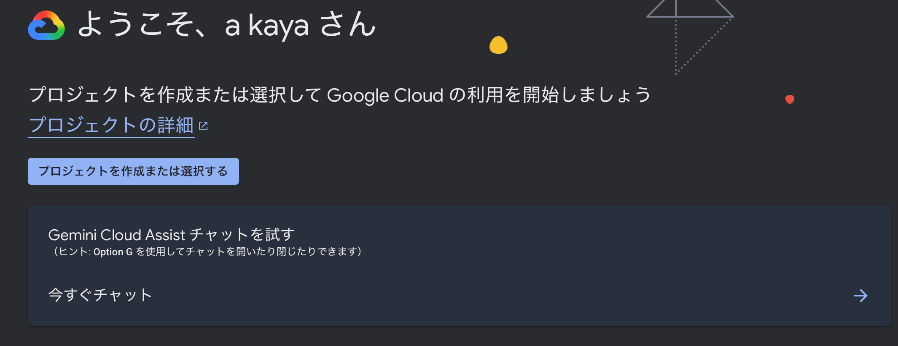
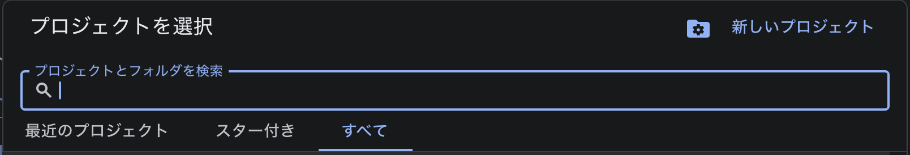
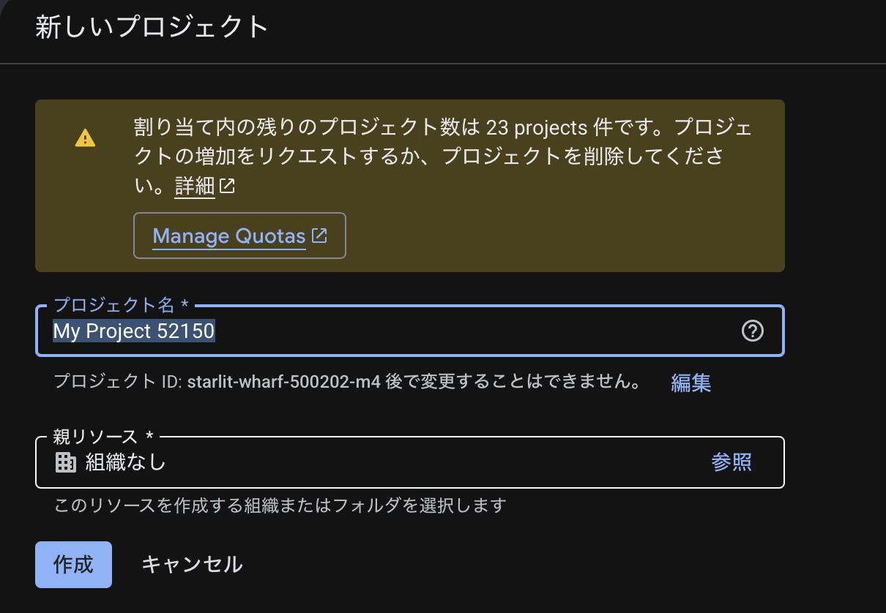
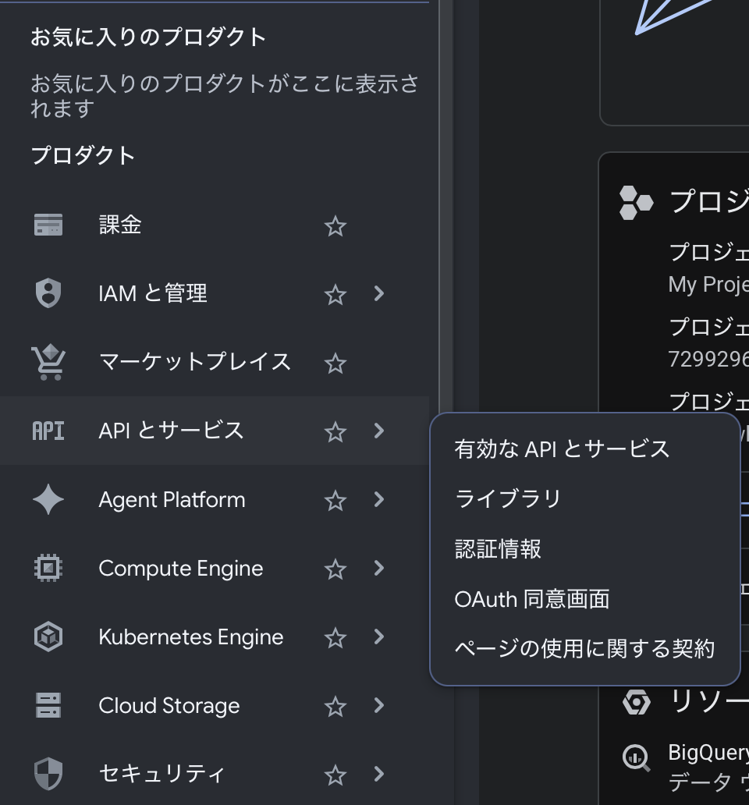
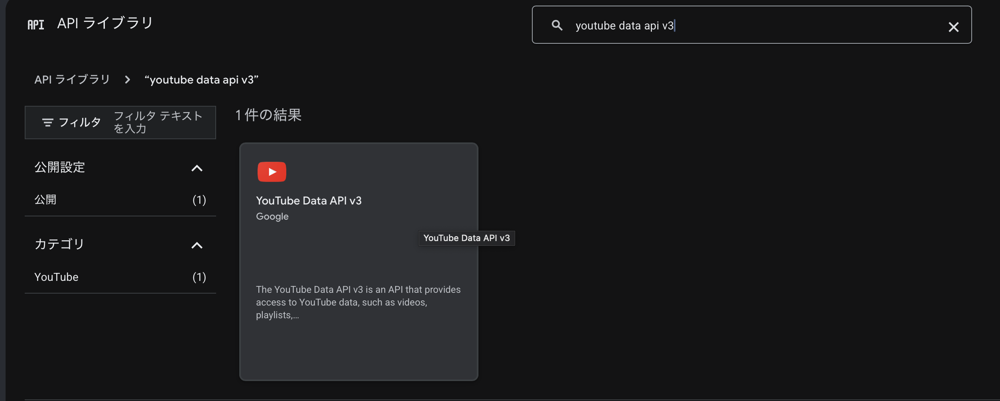
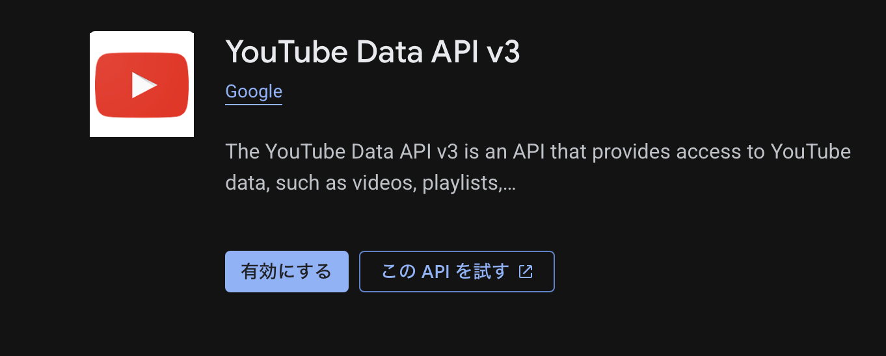
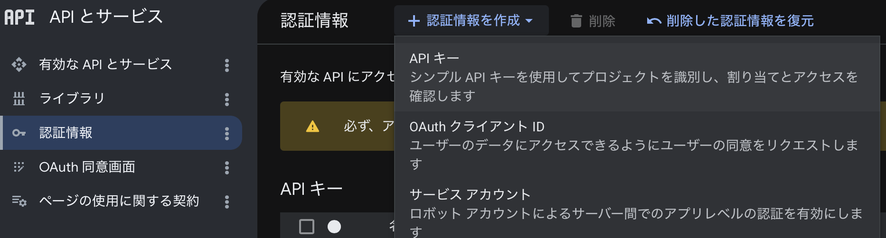
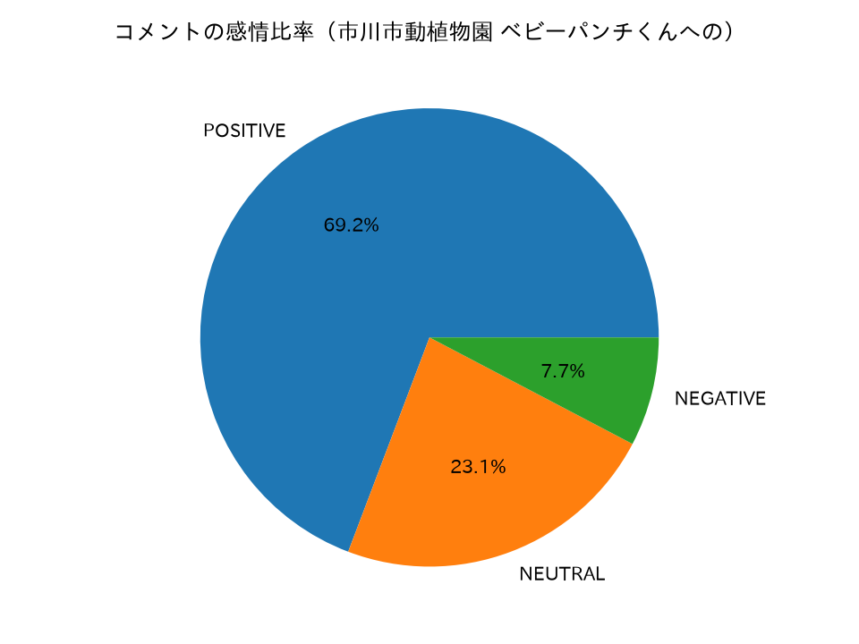
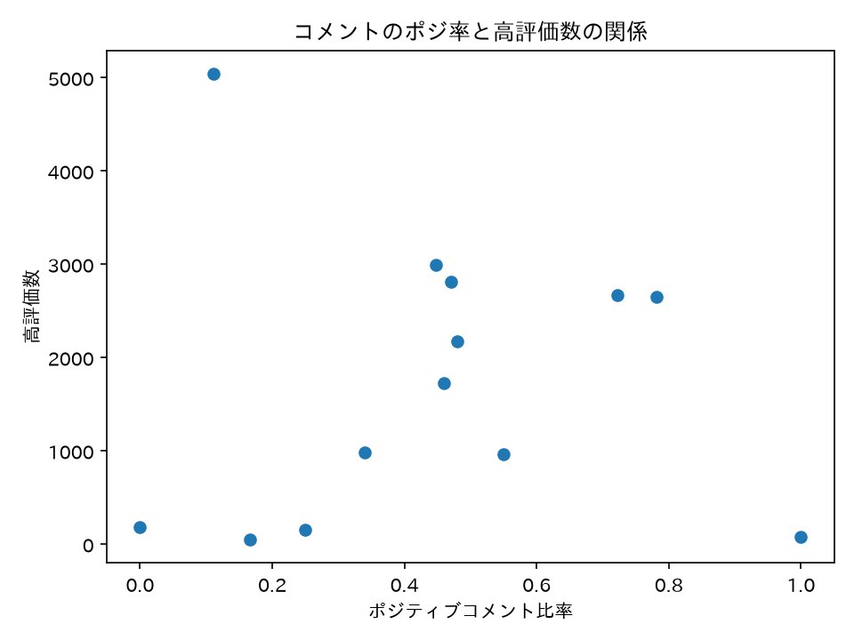

特別講義DS 補足C YouTube Data APIによる動画・チャンネルデータの取得
資料
本資料は章番号外の補足資料です. Google が提供する YouTube Data API v3 を利用して, 動画の統計情報 (再生数・高評価数・コメント数) やチャンネル情報を取得し, pandas DataFrame に整形するまでの流れを扱います.
取得したデータを使ったテキスト分析 (タイトル・説明欄のワードクラウドやトピックモデル) は Ch15 自然言語処理 で扱っている手法が応用できます. また動画の時系列統計を使った回帰分析は Ch11 線形回帰分析 が参考になります.
API という仕組み自体の説明 (REST, HTTP メソッド, JSON など) は補足Aにまとめてあるので, 馴染みのない人は先にそちらを読んでください. YouTube Data API も REST アーキテクチャで提供されており, 本資料では GET メソッドだけを使います.
関連する章・補足:
- 補足A EDINET APIによる財務データの取得 — API の基礎 (REST/HTTP/JSON) の説明と API キーの取り扱い方
- 補足B X(Twitter) APIによるデータの取得 — 別の REST API 事例. X との料金・制限の比較は後の節で扱います
- Ch15 自然言語処理 — 取得したタイトル・説明欄テキストの分析に利用できます
YouTube Data API v3 とは
YouTube Data API v3 は, Google が公式に提供する REST API で, 動画・チャンネル・再生リスト・コメントなどの情報をプログラムから取得・操作できます. データサイエンスの観点では特に以下のリソースが有用です.
| リソース | 取得できる主な情報 |
|---|---|
videos |
再生数, 高評価数, コメント数, 投稿日時, タグ, 説明欄 |
channels |
登録者数, 総再生数, 動画本数, チャンネル概要 |
search |
キーワード・チャンネル・期間などを条件に動画を検索して ID を取得 |
commentThreads |
動画に付いたコメントとそのメタデータ |
本資料では (a) チャンネル統計の取得, (b) キーワード検索による動画一覧の取得, (c) 動画ごとの再生数等の統計取得 という3 段階の worked example を示します.
YouTube Data API v3 は 無料の quota (割り当て) の範囲内で利用できます. 1 日あたり 10,000 ユニット (クォータ単位) が無料で付与されており, 通常の学習・研究用途では十分です. 詳細は 後の節 を参照してください.
API キーの取得
YouTube Data API の利用に必要な認証方式は API キー (公開データの読み取りのみ) と OAuth 2.0 (ログインユーザ固有のデータ操作) の 2 種類があります. 本資料では公開されている動画・チャンネルデータを取得するだけなので, 手続きが簡単な API キー を使います.
API キーは Google Cloud Console から無料で発行します. 手順は次のとおりです (API という仕組み自体や API キーの考え方は補足Aも参照してください).
1. プロジェクトを作成する. Google Cloud Console にアクセスし, 上部の「プロジェクトを作成または選択する」を開きます.

プロジェクト選択ダイアログで右上の「新しいプロジェクト」を選び,

プロジェクト名を付けて「作成」します (既存のプロジェクトがあればそれを選んでも構いません).

2. YouTube Data API v3 を有効化する. 左上のナビゲーションメニューから 「API とサービス」→「ライブラリ」 を開きます.

ライブラリの検索欄で 「youtube data api v3」 を検索し, 表示された YouTube Data API v3 を選択します.

API の詳細画面で 「有効にする」 をクリックします.

3. API キーを作成する. 「API とサービス」→「認証情報」 を開き, 上部の 「+ 認証情報を作成」→「API キー」 を選択します.

4. キーを保管する. 作成された API キーをコピーして安全な場所に保管します.
API キーはパスワードと同じ扱いをしてください. ソースコードに直接書いたまま提出・共有・公開すると漏洩します. 環境変数やコード外ファイルへの分離を推奨します (補足B の認証トークンと同じ注意です).
取得プログラム
必要なライブラリをインストールします. 公式の google-api-python-client を使うと YouTube Data API の構造に沿った簡潔なコードが書けますが, 補足B と同様に requests だけで書くこともできます. 本資料では両方を示しますが, まず google-api-python-client 版を推奨します.
uv add google-api-python-client pandas(a) チャンネル統計の取得
指定したチャンネルの登録者数・総再生数・動画本数を取得します.
from googleapiclient.discovery import build
import pandas as pd
# API キー (環境変数や外部ファイルから読み込むことを推奨)
API_KEY = 'YOUR_API_KEY'
# YouTube Data API クライアントの作成
youtube = build('youtube', 'v3', developerKey=API_KEY)
def get_channel_stats(channel_id: str) -> dict:
"""
チャンネル ID を受け取り, 統計情報 (登録者数・総再生数・動画本数) を辞書で返す.
Parameters
----------
channel_id : str
YouTube チャンネル ID (例: "UCxxxxxx")
Returns
-------
dict
チャンネル名, 登録者数, 総再生数, 動画本数を含む辞書
"""
request = youtube.channels().list(
part='snippet,statistics',
id=channel_id
)
response = request.execute()
if not response.get('items'):
raise ValueError(f"チャンネルが見つかりませんでした: {channel_id}")
item = response['items'][0]
stats = item['statistics']
snippet = item['snippet']
return {
'channel_id' : channel_id,
'channel_name' : snippet['title'],
'subscriber_count' : int(stats.get('subscriberCount', 0)),
'view_count' : int(stats.get('viewCount', 0)),
'video_count' : int(stats.get('videoCount', 0)),
}
# 例: NHK のチャンネル (channel_id は実際の ID に置き換えてください)
channel_id = 'UCXXXXXXXXXXXXXXXXXXXXXXX' # 実際のチャンネル ID に置き換える (調べ方は下の note を参照)
stats = get_channel_stats(channel_id)
df_channel = pd.DataFrame([stats])
print(df_channel)チャンネル ID の調べ方: YouTube でチャンネルを開いたとき URL の @xxxx 部分はハンドルであり, チャンネル ID (UCxxxxxx 形式) とは異なる場合があります. チャンネルページ → 「概要」→「チャンネルを共有」→ 「チャンネル ID をコピー」で確認できます. または search エンドポイントでチャンネル名から検索する方法もあります (Quota を 100 ユニット消費します).
(b) キーワード検索による動画一覧の取得
「データサイエンス 入門」などのキーワードで動画を検索し, 動画 ID・タイトル・投稿日を一覧化します.
def search_videos(query: str, max_results: int = 10) -> pd.DataFrame:
"""
キーワードで YouTube 動画を検索し, 動画 ID・タイトル・投稿日の DataFrame を返す.
Parameters
----------
query : str
検索キーワード
max_results : int
取得する動画の最大件数 (関数の既定値 10, API の上限は 50)
Returns
-------
pd.DataFrame
video_id, title, published_at を列に持つ DataFrame
"""
request = youtube.search().list(
part='snippet',
q=query,
type='video', # 動画のみ (チャンネル・再生リストを除外)
maxResults=max_results,
relevanceLanguage='ja' # 日本語優先
)
response = request.execute()
rows = []
for item in response.get('items', []):
rows.append({
'video_id' : item['id']['videoId'],
'title' : item['snippet']['title'],
'published_at': item['snippet']['publishedAt'],
})
return pd.DataFrame(rows)
# 例: 「データサイエンス 入門」で検索
df_search = search_videos('データサイエンス 入門', max_results=10)
print(df_search)search().list() は 1 回の呼び出しで 100 ユニット を消費します. 無料枠 (1 日 10,000 ユニット) の中では 100 回まで検索できますが, ループ中で大量に呼ぶと quota がすぐ尽きるので注意してください.
(c) 動画ごとの統計 (再生数・高評価数・コメント数) の取得
(b) で得た動画 ID のリストを使って, 各動画の再生数・高評価数・コメント数を取得します. videos().list() は 1 回で最大 50 件の動画 ID を渡せるので, バッチ処理でまとめて取得すると quota を節約できます.
def get_video_stats(video_ids: list[str]) -> pd.DataFrame:
"""
動画 ID のリストを受け取り, 各動画の統計情報を DataFrame で返す.
50 件を超える場合は自動的に複数回に分けてリクエストする.
Parameters
----------
video_ids : list[str]
動画 ID のリスト
Returns
-------
pd.DataFrame
video_id, title, view_count, like_count, comment_count, published_at を列に持つ DataFrame
"""
rows = []
# YouTube API は 1 リクエストあたり最大 50 件
chunk_size = 50
for i in range(0, len(video_ids), chunk_size):
chunk = video_ids[i:i + chunk_size]
request = youtube.videos().list(
part='snippet,statistics',
id=','.join(chunk)
)
response = request.execute()
for item in response.get('items', []):
stats = item.get('statistics', {})
snippet = item.get('snippet', {})
rows.append({
'video_id' : item['id'],
'title' : snippet.get('title', ''),
'published_at' : snippet.get('publishedAt', ''),
'view_count' : int(stats.get('viewCount', 0)),
'like_count' : int(stats.get('likeCount', 0)),
'comment_count': int(stats.get('commentCount', 0)),
})
return pd.DataFrame(rows)
# (b) の検索結果を使って動画統計を取得
video_ids = df_search['video_id'].tolist()
df_stats = get_video_stats(video_ids)
# 再生数の多い順に並べ替え
df_stats_sorted = df_stats.sort_values('view_count', ascending=False)
print(df_stats_sorted[['title', 'view_count', 'like_count', 'comment_count']])まとめ: 取得→分析のパイプライン
上の 3 つのステップをつなぐと, キーワード検索 → 動画統計取得 → DataFrame 化 → CSV 保存 という一連のパイプラインになります.
import os
from googleapiclient.discovery import build
import pandas as pd
# ---- 設定 ----
API_KEY = os.environ.get('YOUTUBE_API_KEY', 'YOUR_API_KEY')
QUERY = 'データサイエンス 入門'
MAX_VIDEOS = 20
OUTPUT_CSV = 'youtube_stats.csv'
# ---- クライアント ----
youtube = build('youtube', 'v3', developerKey=API_KEY)
# ---- (b) 動画検索 ----
def search_videos(query, max_results=10):
req = youtube.search().list(
part='snippet', q=query, type='video',
maxResults=max_results, relevanceLanguage='ja'
)
res = req.execute()
return [
{'video_id': item['id']['videoId'],
'title' : item['snippet']['title'],
'published_at': item['snippet']['publishedAt']}
for item in res.get('items', [])
]
# ---- (c) 動画統計 ----
def get_video_stats(video_ids):
rows = []
for i in range(0, len(video_ids), 50):
chunk = video_ids[i:i+50]
res = youtube.videos().list(
part='snippet,statistics', id=','.join(chunk)
).execute()
for item in res.get('items', []):
s = item.get('statistics', {})
rows.append({
'video_id' : item['id'],
'title' : item['snippet'].get('title', ''),
'published_at' : item['snippet'].get('publishedAt', ''),
'view_count' : int(s.get('viewCount', 0)),
'like_count' : int(s.get('likeCount', 0)),
'comment_count': int(s.get('commentCount', 0)),
})
return rows
# ---- 実行 ----
print(f'「{QUERY}」で動画を検索中...')
search_results = search_videos(QUERY, max_results=MAX_VIDEOS)
video_ids = [r['video_id'] for r in search_results]
print(f'{len(video_ids)} 件の動画の統計を取得中...')
stats_rows = get_video_stats(video_ids)
df = pd.DataFrame(stats_rows)
df = df.sort_values('view_count', ascending=False).reset_index(drop=True)
df.to_csv(OUTPUT_CSV, index=False, encoding='utf-8-sig')
print(f'{OUTPUT_CSV} に保存しました.')
print(df[['title', 'view_count', 'like_count', 'comment_count']].to_string())このコードで取得したデータは Ch15 自然言語処理 のワードクラウド・トピックモデルの手法を title 列に適用したり, Ch11 線形回帰分析 で view_count を目的変数とした回帰モデルを構築したりするときの入力として使えます.
Quota・制限と X との比較
YouTube Data API と補足B で扱った X (Twitter) API を比較すると, 研究・学習での利用しやすさに大きな差があります. X 側の料金・制限の詳細は補足Bにまとめてあります.
| 項目 | YouTube Data API v3 | X (Twitter) API v2 |
|---|---|---|
| 無料枠 | 10,000 ユニット/日 (継続更新) | Basic プランは月 200 USD〜, 無料版は月 100 件のみ |
| 認証方式 | API キー (公開データ) / OAuth (個人データ) | Bearer Token (取得に英文 250 字の目的申請が必要) |
| 主なコスト | search = 100 U, videos.list = 1 U, channels.list = 1 U |
リクエスト数・月次ツイート取得数で課金 |
| 過去データ | 投稿日 (publishedAfter 等) で絞り込み可能 |
Free/Basic は直近 7 日のみ (全期間取得は Pro = 月 5,000 USD) |
| 利用規約の安定性 | Google の方針変更は少ない | 頻繁に改定・値上げが行われている (2023〜) |
Quota の消費例: 動画 20 件の統計を取得するために search().list() を 1 回 (100 U) + videos().list() を 1 回 (1 U) = 101 ユニット で済みます. 無料枠 10,000 U 内では約 99 回の同規模操作が可能です.
Quota が不足した場合は翌日 (太平洋時間の午前 0 時) にリセットされます. 使い切ってしまった場合は Google Cloud Console で追加 Quota を購入することもできますが, 学習目的では不要です.
requests を使った実装 (補足B との比較)
補足B では requests ライブラリを直接使って X API を叩きました. YouTube Data API でも同様に requests だけで実装できます. ライブラリ選択の方針については 補足A の考え方が参考になります.
import requests
import pandas as pd
API_KEY = 'YOUR_API_KEY'
BASE_URL = 'https://www.googleapis.com/youtube/v3'
def search_videos_requests(query: str, max_results: int = 10) -> list[dict]:
"""requests を使ったキーワード検索"""
url = f'{BASE_URL}/search'
params = {
'part' : 'snippet',
'q' : query,
'type' : 'video',
'maxResults' : max_results,
'relevanceLanguage': 'ja',
'key' : API_KEY,
}
response = requests.get(url, params=params)
if response.status_code != 200:
raise Exception(f'Error {response.status_code}: {response.text}')
data = response.json()
return [
{'video_id': item['id']['videoId'],
'title' : item['snippet']['title']}
for item in data.get('items', [])
]
# 動作確認
results = search_videos_requests('データサイエンス 入門', max_results=5)
print(pd.DataFrame(results))google-api-python-client 版と比べると URL や パラメータ名を自前で管理する必要がありますが, requests だけで完結するため環境によっては導入が簡単です.
発展: コメントのネガポジ分析 (政治動画の簡易分析)
ここまでで取得した動画・チャンネルの統計に加え, コメントを取得すると, 視聴者の反応をテキストとして分析できます. ここでは応用例として, 政治関連の動画に付いたコメントを 事前学習済みの感情分析モデルでポジティブ/ネガティブに分類し, その結果と動画の属性 (再生数・高評価数) の関係を簡単に分析してみます.
背景となる研究: 千葉商科大学の丹波ら (2025)「SNS 投稿日時及びイベントの時間的変遷による感情変動のテキスト解析」(SICE) は, 参議院選挙2025 期間中の政党別の X (Twitter) 投稿を日本語 BERT による感情スコアに変換し, STL 分解やワードクラウド・LDA で時間的変遷を分析しています. 本資料はその簡易版として, 対象を YouTube のコメントに替え, 時系列分解は省いて「動画ごとの感情の傾向」と「動画属性との関係」に絞ります.
(d) コメントの取得 (commentThreads)
commentThreads リソースを使うと, 指定した動画のトップレベルコメントを取得できます. 1 回の呼び出しで最大 100 件取得でき, list_next() でページ送りできます. 消費 quota は 1 ユニット/回です.
def get_video_comments(video_id: str, max_comments: int = 100) -> pd.DataFrame:
"""
動画 ID を受け取り, トップレベルコメントを DataFrame で返す.
Parameters
----------
video_id : str
対象動画の ID
max_comments : int
取得するコメントの最大件数
Returns
-------
pd.DataFrame
video_id, comment, like_count, published_at を列に持つ DataFrame
"""
rows = []
request = youtube.commentThreads().list(
part='snippet',
videoId=video_id,
maxResults=100, # 1 ページの上限
textFormat='plainText',
order='relevance',
)
while request is not None and len(rows) < max_comments:
response = request.execute()
for item in response.get('items', []):
c = item['snippet']['topLevelComment']['snippet']
rows.append({
'video_id' : video_id,
'comment' : c['textDisplay'],
'like_count' : int(c.get('likeCount', 0)),
'published_at': c['publishedAt'],
})
request = youtube.commentThreads().list_next(request, response)
return pd.DataFrame(rows[:max_comments])コメントが無効化されている動画では commentThreads().list() が 403 (commentsDisabled) を返します. 複数動画をまとめて処理するときは try / except で囲み, 失敗した動画はスキップしてください.

事前学習済みモデルによるネガポジ判定
感情分析には, Amazon レビューでファインチューニングされた日本語 BERT モデル christian-phu/bert-finetuned-japanese-sentiment を使います. このモデルは各テキストを POSITIVE / NEGATIVE / NEUTRAL の 3 クラスに分類し, その確信度スコア (0〜1) を返します.
uv add transformers fugashi unidic-lite torch tqdm japanize-matplotlibimport torch
from transformers import pipeline, AutoModelForSequenceClassification, BertJapaneseTokenizer
from tqdm import tqdm
MODEL_NAME = 'christian-phu/bert-finetuned-japanese-sentiment'
def load_classifier():
"""感情分析の pipeline を作成する. GPU があれば利用する."""
if torch.backends.mps.is_available():
device = torch.device('mps') # Mac の GPU
elif torch.cuda.is_available():
device = torch.device('cuda:0') # NVIDIA GPU
else:
device = torch.device('cpu')
model = AutoModelForSequenceClassification.from_pretrained(MODEL_NAME)
tokenizer = BertJapaneseTokenizer.from_pretrained(MODEL_NAME)
return pipeline('sentiment-analysis', model=model, tokenizer=tokenizer, device=device)
def classify_comments(df: pd.DataFrame, classifier) -> pd.DataFrame:
"""comment 列を分類し, Label と Score を付与した DataFrame を返す."""
df = df[df['comment'].apply(lambda x: isinstance(x, str))].copy()
labels, scores = [], []
for text in tqdm(df['comment']):
try:
result = classifier(text, truncation=True)[0] # 長文はモデル最大長で切り詰め
labels.append(result['label'].upper()) # POSITIVE / NEGATIVE / NEUTRAL に正規化
scores.append(round(result['score'], 4))
except Exception:
labels.append('ERROR')
scores.append(0.0)
df['Label'] = labels
df['Score'] = scores
return df初回はモデル (数百 MB) のダウンロードに時間がかかります. テストデータでの Accuracy は約 0.81 で万能ではありません — 皮肉や文脈依存の表現は誤判定しやすい点に注意してください.
1 本の動画の感情比率を見る
まず 1 本の動画について, コメントのポジ/ネガ/ニュートラルの比率を可視化してみます.
import matplotlib.pyplot as plt
import japanize_matplotlib # 日本語ラベルの文字化けを防ぐ
classifier = load_classifier()
video_id = 'XXXXXXXXXXX' # 任意の政治関連動画の ID
comments = get_video_comments(video_id, max_comments=100)
comments = classify_comments(comments, classifier)
counts = comments['Label'].value_counts()
counts.plot.pie(autopct='%1.1f%%', ylabel='')
plt.title('コメントの感情比率')
plt.show()
複数動画を横断して属性との関係を見る
次に, 同じ政治トピックの動画を複数集め, 動画ごとのポジティブコメント比率を計算して, 再生数や高評価数との関係を調べます. ポジ率は 1 本だけだと 1 つの値にしかなりませんが, 複数動画を並べると属性との相関を見られます.
LABEL_TO_SCORE = {'POSITIVE': 1, 'NEUTRAL': 0, 'NEGATIVE': -1}
def summarize_video(video_id: str, classifier) -> dict:
"""1 本の動画のコメントを分類し, 感情の要約統計を返す."""
cdf = get_video_comments(video_id, max_comments=100)
if cdf.empty:
return None
cdf = classify_comments(cdf, classifier)
signed = cdf['Label'].map(LABEL_TO_SCORE).fillna(0) * cdf['Score']
return {
'video_id' : video_id,
'n_comments' : len(cdf),
'positive_ratio': (cdf['Label'] == 'POSITIVE').mean(),
'mean_score' : signed.mean(),
}
# (b) で検索した政治トピックの動画 ID 群を使う
df_search = search_videos('参議院選挙 2025', max_results=15)
video_ids = df_search['video_id'].tolist()
records = []
for vid in video_ids:
try:
s = summarize_video(vid, classifier)
if s is not None:
records.append(s)
except Exception as e:
print(f'skip {vid}: {e}') # コメント無効化などはスキップ
df_sent = pd.DataFrame(records)
# (c) の get_video_stats で再生数・高評価数を取得して結合
df_stats = get_video_stats(video_ids)
merged = df_sent.merge(df_stats, on='video_id')
# 相関
cols = ['positive_ratio', 'mean_score', 'view_count', 'like_count', 'comment_count']
print(merged[cols].corr())
# 散布図: ポジ率 vs 高評価数
plt.scatter(merged['positive_ratio'], merged['like_count'])
plt.xlabel('ポジティブコメント比率')
plt.ylabel('高評価数')
plt.title('コメントのポジ率と高評価数の関係')
plt.show()
このように,「コメントがポジティブな動画ほど高評価が多いか」「再生数とコメントの感情に関係はあるか」といった問いを動画横断で定量的に調べられます. ただし丹波ら (2025) が指摘するように, 感情は時間帯やイベント (選挙日程など) によっても変動します. より踏み込んだ分析として, 取得したコメントを Ch15 自然言語処理 のワードクラウド・LDA で語彙レベルに分解したり, Ch11 線形回帰分析 でポジ率を説明変数とした回帰モデルを組んだりできます.
サンプルデータ: API キーが無くても分析を試せるよう, コメントに感情ラベルを付与したサンプル CSV を後日 slds_data/c1/ に配置予定です (補足B の tweets.csv と同じ運用). 列は video_id, comment, like_count, published_at, Label, Score です.
Exercise SLDSc-1
YouTube Data API による動画統計の取得
本資料の worked example を参考にして, 任意のキーワード (自分の研究テーマや興味のある分野) で YouTube 動画を検索し, 上位 10 件の再生数・高評価数・コメント数を取得して CSV ファイルに保存するプログラムを作成してください.
取得した DataFrame を使って, 以下の問いにも答えてください.
- 再生数が最も多い動画のタイトルと再生数は何か?
- 高評価数と再生数の間に相関はあるか? (
df.corr()を使って確認してください.)
提出ファイル名: sldsc-1.py
回答例
import os
from googleapiclient.discovery import build
import pandas as pd
API_KEY = os.environ.get('YOUTUBE_API_KEY', 'YOUR_API_KEY')
QUERY = 'データサイエンス 入門' # ← 任意のキーワードに変更
youtube = build('youtube', 'v3', developerKey=API_KEY)
# 検索
search_res = youtube.search().list(
part='snippet', q=QUERY, type='video',
maxResults=10, relevanceLanguage='ja'
).execute()
video_ids = [item['id']['videoId'] for item in search_res.get('items', [])]
# 統計取得
stats_res = youtube.videos().list(
part='snippet,statistics', id=','.join(video_ids)
).execute()
rows = []
for item in stats_res.get('items', []):
s = item.get('statistics', {})
rows.append({
'video_id' : item['id'],
'title' : item['snippet']['title'],
'view_count' : int(s.get('viewCount', 0)),
'like_count' : int(s.get('likeCount', 0)),
'comment_count': int(s.get('commentCount', 0)),
})
df = pd.DataFrame(rows).sort_values('view_count', ascending=False).reset_index(drop=True)
df.to_csv('sldsc-1.csv', index=False, encoding='utf-8-sig')
print(df[['title', 'view_count', 'like_count']])
# 問2: 相関
print('\n--- 相関係数 ---')
print(df[['view_count', 'like_count', 'comment_count']].corr())問 1: df.iloc[0] で最大再生数の行を取り出せます.
問 2: 一般に view_count と like_count には正の相関が見られますが, コンテンツのジャンルや検索キーワードによって異なります. 相関が低い場合は「炎上系」や「BGM 系」動画が混在している可能性があります.
Exercise SLDSc-2
チャンネル比較分析
2 つ以上の YouTube チャンネル (例: 大学の公式チャンネルや研究機関のチャンネル) のチャンネル ID を調べ, 本資料の get_channel_stats() 関数を使って登録者数・総再生数・動画本数を取得して比較する DataFrame を作成してください.
提出ファイル名: sldsc-2.py
回答例
import os
from googleapiclient.discovery import build
import pandas as pd
API_KEY = os.environ.get('YOUTUBE_API_KEY', 'YOUR_API_KEY')
youtube = build('youtube', 'v3', developerKey=API_KEY)
# 比較したいチャンネルの ID リスト (実際の ID に置き換えてください)
channel_ids = [
'UCXXXXXXXXXXXXXXXXXXXXXXX', # チャンネル1
'UCYYYYYYYYYYYYYYYYYYYYYYY', # チャンネル2
]
def get_channel_stats(channel_id):
res = youtube.channels().list(
part='snippet,statistics', id=channel_id
).execute()
if not res.get('items'):
return None
item = res['items'][0]
s = item['statistics']
return {
'channel_id' : channel_id,
'channel_name' : item['snippet']['title'],
'subscriber_count': int(s.get('subscriberCount', 0)),
'view_count' : int(s.get('viewCount', 0)),
'video_count' : int(s.get('videoCount', 0)),
}
rows = [get_channel_stats(cid) for cid in channel_ids]
df = pd.DataFrame([r for r in rows if r is not None])
df = df.sort_values('subscriber_count', ascending=False).reset_index(drop=True)
df.to_csv('sldsc-2.csv', index=False, encoding='utf-8-sig')
print(df)登録者数や総再生数の大小と, 動画本数の関係を観察してみましょう. 「少ない動画本数で高い総再生数を持つ」チャンネルはバズ動画を持つ可能性があります.
Exercise SLDSc-3
コメントのネガポジ分析と動画属性の関係
任意の政治・社会トピックのキーワードで YouTube 動画を複数 (5〜15 本程度) 検索し, 各動画のコメントを事前学習済みモデルでネガポジ判定してください. 動画ごとのポジティブコメント比率を求め, 再生数・高評価数との相関を df.corr() と散布図で確認してください.
- ポジティブコメント比率が最も高い動画と最も低い動画は何か?
- ポジ率と高評価数の間に相関はあるか? あるとすればどの程度か?
提出ファイル名: sldsc-3.py
回答例
import torch
from googleapiclient.discovery import build
from transformers import pipeline, AutoModelForSequenceClassification, BertJapaneseTokenizer
import pandas as pd
import matplotlib.pyplot as plt
import japanize_matplotlib
API_KEY = 'YOUR_API_KEY'
youtube = build('youtube', 'v3', developerKey=API_KEY)
MODEL_NAME = 'christian-phu/bert-finetuned-japanese-sentiment'
# --- 分類器 ---
device = torch.device('mps' if torch.backends.mps.is_available()
else 'cuda:0' if torch.cuda.is_available() else 'cpu')
clf = pipeline('sentiment-analysis',
model=AutoModelForSequenceClassification.from_pretrained(MODEL_NAME),
tokenizer=BertJapaneseTokenizer.from_pretrained(MODEL_NAME),
device=device)
# --- 検索 ---
search = youtube.search().list(part='snippet', q='参議院選挙 2025',
type='video', maxResults=15,
relevanceLanguage='ja').execute()
video_ids = [it['id']['videoId'] for it in search.get('items', [])]
# --- 動画ごとにポジ率を集約 ---
records = []
for vid in video_ids:
try:
res = youtube.commentThreads().list(
part='snippet', videoId=vid,
maxResults=100, textFormat='plainText', order='relevance').execute()
except Exception:
continue # コメント無効化などはスキップ
comments = [it['snippet']['topLevelComment']['snippet']['textDisplay']
for it in res.get('items', [])]
if not comments:
continue
labels = pd.Series([clf(t, truncation=True)[0]['label'].upper() for t in comments])
records.append({'video_id': vid, 'positive_ratio': (labels == 'POSITIVE').mean()})
df_sent = pd.DataFrame(records)
# --- 動画統計と結合 ---
stats = youtube.videos().list(part='statistics',
id=','.join(df_sent['video_id'])).execute()
rows = [{'video_id': it['id'],
'view_count': int(it['statistics'].get('viewCount', 0)),
'like_count': int(it['statistics'].get('likeCount', 0))}
for it in stats.get('items', [])]
merged = df_sent.merge(pd.DataFrame(rows), on='video_id')
# 問 1
print('最もポジティブ:', merged.loc[merged['positive_ratio'].idxmax(), 'video_id'])
print('最もネガティブ:', merged.loc[merged['positive_ratio'].idxmin(), 'video_id'])
# 問 2
print(merged[['positive_ratio', 'view_count', 'like_count']].corr())
plt.scatter(merged['positive_ratio'], merged['like_count'])
plt.xlabel('ポジティブコメント比率'); plt.ylabel('高評価数')
plt.show()問 1: positive_ratio の idxmax() / idxmin() で特定できます.
問 2: 一般に応援目的の動画はポジティブコメントが多く高評価も集まりやすいため正の相関が出やすいですが, 批判的な話題や炎上動画ではポジ率が低くても再生数・コメント数が伸びることがあり, 相関は一定しません.